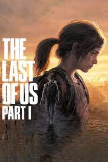
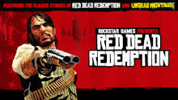

¿Qué es Record of Programming?
¿Quiénes somos?
¿Buscas trabajo?
Record Of Programming
Análisis Videojueguiles


Detalles y Análisis del Juego
Selecciona un juego para ver los detalles y el análisis.
★
★
★
★
★